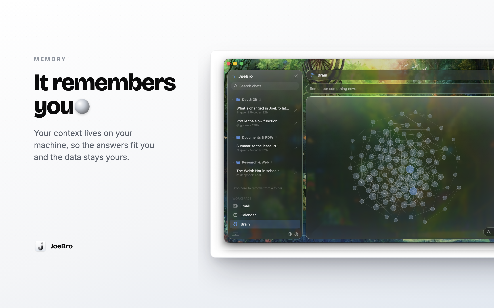

I’m Joe, the creator of JoeBro. A local-first workspace gives you more direct control over its files, but control also means looking after them. “Local” should not be read as “automatically backed up” or “easy to move without checking.”
JoeBro keeps chats, memory, notes, tasks and documents in its local application data, with a SQLite store under ~/Library/Application Support/JoeBro/. Long-term Brain memory is organized as topic pages in the app’s data store. The phone agent has a separate collection of plain Markdown memory files under the same data folder; those can be read and edited from the Mac or phone. Documents may also live in folders you bind to chats, outside that application data directory.
That means a useful backup plan begins by identifying the things you want to preserve. The application data folder is important, but a project folder you opened in the editor may be elsewhere. API keys are stored locally, too, and should be handled as sensitive material. The repositories do not describe a single built-in export that packages every workspace file, external integration setting, phone configuration and key into one portable archive, so avoid assuming a copy of one file captures everything.
SQLite is a database, which is why a live manual copy should not be treated as a guaranteed consistent backup. Prefer a backup method designed for your Mac and its running applications; if you make a manual data copy, close JoeBro first as a prudent precaution. Then test recovery from a separate copy rather than finding out during a device failure. That is general backup practice, not a promise that every state can be restored automatically.
Portability also has an inference boundary. Chats and files may be local while model requests go elsewhere: a local model receives prompts at the endpoint you choose, and a hosted API provider receives prompts when selected. Cloak Mode replaces patterns it recognizes, but is not a backup encryption system or a guarantee that no private detail can leave. Keep backups protected as carefully as the originals.
I’m Joe, creator of JoeBro for macOS and JoeBro Mobile. The phone app is source-built and pairs with JoeBro on your Mac in the documented public release.
Source code and current setup requirements
JoeBro is GPLv3 software. Read the repositories for installation steps, prerequisites, and current limits.